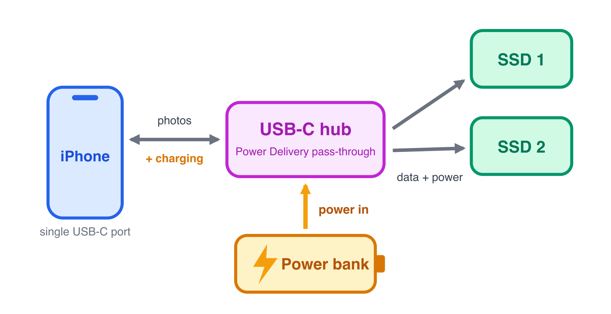
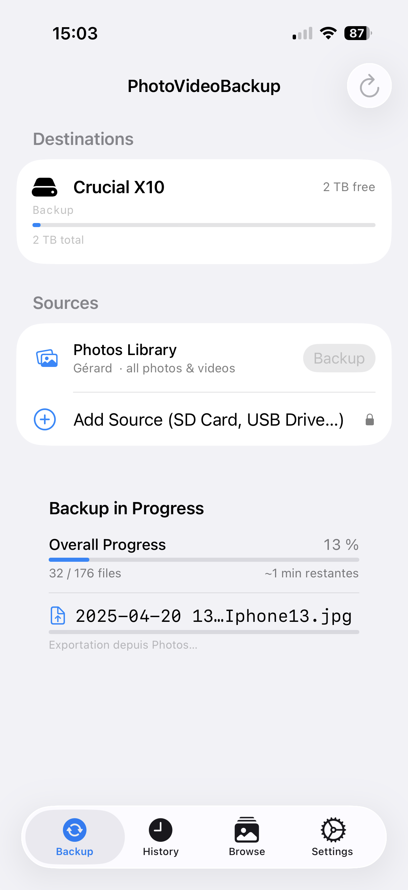

PhotoVideoBackup — Guide utilisateur
Sauvegardez vos photos et vidéos sur un SSD externe, une carte SD ou un NAS — depuis votre iPhone ou votre téléphone Android.
Guide de PhotoVideoBackup 2.8 — iPhone (iOS 16 ou plus récent) et Android (9 ou plus récent)
1 Qu'est-ce que PhotoVideoBackup ?
PhotoVideoBackup copie vos photos et vidéos depuis votre téléphone — ou depuis une carte mémoire d'appareil photo — vers un SSD portable, une clé USB ou un NAS. Vos fichiers ne passent jamais par un service en ligne : l'application n'a ni serveur ni compte.
- Le stockage de votre téléphone est plein et vous voulez libérer de la place en toute sécurité.
- Vous rentrez de voyage avec une carte SD pleine de rushs (DJI, GoPro, Insta360, Blackmagic…) et voulez les mettre à l'abri tout de suite.
- Vous voulez une copie personnelle qui ne dépende ni d'iCloud ni de Google Photos.
Qu'est-ce qui la rend fiable ? Chaque fichier copié est relu et vérifié par une empreinte mathématique (SHA-256). Si un seul octet est faux, l'application vous le dit — vous n'avez jamais une sauvegarde corrompue sans le savoir.
L'application ne fait que copier. Elle ne déplace ni ne supprime jamais rien de la source, sauf si vous le demandez explicitement après une sauvegarde (voir « Historique et rapports »).
2 Gratuit et Pro
PhotoVideoBackup se télécharge gratuitement. Un achat Pro — payé une seule fois, sans abonnement — débloque les fonctions avancées :
| Fonction | Gratuit | Pro |
|---|---|---|
| Sauvegarder la photothèque vers un disque ou un dossier | ✓ | ✓ |
| Plusieurs sauvegardes, chacune avec ses disques, son NAS et ses réglages | — | ✓ |
| Parcourir et prévisualiser les sauvegardes (aperçu LUT compris) | ✓ | ✓ |
| Sauvegarder cartes d'appareils et disques USB (SD, DJI, GoPro, Insta360…) | — | ✓ |
| Copie miroir vers un second disque | — | ✓ |
| Sauvegarder vers un NAS en Wi-Fi | — | ✓ |
| Sauvegarder vers un serveur WebDAV (Nextcloud, pCloud…) | — | ✓ |
| Étalonner des vidéos LOG avec une LUT (export H.265) | — | ✓ |


3 Ce qu'il vous faut
| iPhone / iPad | Android | |
|---|---|---|
| L'appareil | Un iPhone avec port USB-C (iPhone 15 ou plus récent), iOS 16 ou plus récent | Un téléphone ou une tablette Android, Android 9 ou plus récent |
| Un disque | N'importe quel SSD USB-C (Samsung T7, SanDisk Extreme, WD My Passport…) | N'importe quel SSD ou clé USB-C, ou un dossier du téléphone |
| Un hub ou un lecteur (facultatif) | Un petit hub USB-C pour brancher ensemble un SSD et un lecteur de cartes | Un lecteur de cartes USB-C, ou un hub OTG |
Sauvegardes longues, deux disques. Le téléphone n’a qu’un seul port USB-C, et les SSD alimentés par le bus y puisent leur énergie. Un hub USB-C avec passage de charge (Power Delivery) permet de brancher deux disques et une batterie externe (ou le chargeur) en même temps : la batterie alimente le hub, le hub alimente les SSD et charge le téléphone, et la sauvegarde peut durer des heures sans vider la batterie.

4 Premier lancement et autorisations
Un écran d'accueil présente l'application et cinq montages types — du simple téléphone → SSD jusqu'au NAS atteint par un VPN. Touchez Commencer.

- iPhone / iPad : autorisez l'accès complet à votre photothèque. Sans lui, l'application ne peut pas lire vos photos.
- Android : autorisez l'accès à vos photos et vidéos. Autorisez aussi l'accès à la position de vos photos — sans cela, Android retire les données GPS des fichiers qu'il fournit et la sauvegarde ne serait pas l'original. Autorisez les notifications pour être prévenu à la fin d'une sauvegarde.
5 Définir le nom de l'appareil et la destination
- Ouvrez l'onglet Réglages. Dans la section Appareil, saisissez un nom de dossier — par exemple iPhone d'Anna ou Pixel 8. C'est le nom du dossier sur le disque : deux téléphones qui sauvegardent sur le même disque restent ainsi séparés. Une sauvegarde ne démarre pas tant qu'aucun nom n'est défini.
- Branchez votre disque.
- iPhone / iPad / Android : ouvrez l’onglet Sauvegardes, touchez Nouvelle sauvegarde (ou +), choisissez Photothèque / Galerie, puis touchez Ajouter une destination → Un dossier… et choisissez le disque, ou un dossier dessus, dans l’explorateur de fichiers. Donnez un nom à la sauvegarde et touchez Créer.
- Le nom du disque apparaît sur la carte de la sauvegarde, avec son espace libre. Vous ne le faites qu’une fois : l’app reconnaît le disque la fois suivante.


6 Sauvegarder vos photos et vidéos
Ouvrez l’onglet Sauvegardes. Chaque sauvegarde est une carte avec son nom, d’où elle copie et vers où, et l’espace libre de son disque. Touchez Lancer. Avec Pro, vous pouvez créer plusieurs sauvegardes — par exemple une vers un disque et une vers un NAS — chacune avec ses propres réglages : appui long sur la carte (iPhone) ou menu ⋮ (Android), puis Réglages. Un petit badge sur le pictogramme indique comment circulent les données : un câble pour un disque local, le Wi-Fi ou les données mobiles (SIM / eSIM) pour un NAS ou un dossier cloud, selon le réseau sur lequel se trouve le téléphone. Une destination est un dossier — un disque, une carte, ou n’importe quel dossier de l’app Fichiers, iCloud Drive et Google Drive compris — ou un serveur atteint par une adresse et un compte (un NAS, Nextcloud, pCloud…). Une sauvegarde peut en avoir plusieurs de chaque.
Avant le lancement, un écran Prêt à sauvegarder ? montre ce qui va se passer : la source, puis chaque destination, avec un pictogramme selon son type (disque, NAS, dossier cloud, ou le téléphone lui-même — en orange, avec un avertissement). Si la sauvegarde exige du secteur, il indique aussi si le téléphone est en charge. Vérifiez, puis touchez Lancer la sauvegarde, ou la croix pour annuler.


L'application analyse la photothèque, puis copie. La première sauvegarde est la plus longue ; les suivantes ne copient que les nouveautés et sont bien plus rapides.
- Les photos stockées uniquement dans iCloud / Google Photos sont d'abord téléchargées — cela demande une connexion et un peu de temps.
- L'application copie chaque fichier directement vers la destination : cela fonctionne même quand le téléphone est presque plein.
- Vous pouvez quitter l'application : une notification vous prévient à la fin de la sauvegarde.
7 Sauvegarder une carte d'appareil photo (Pro)
- Branchez le lecteur de cartes au téléphone et insérez la carte (utilisez un hub si le SSD doit rester branché aussi).
- iPhone / iPad / Android : dans l’onglet Sauvegardes, touchez + et choisissez Caméra ou carte SD, puis Ajouter une source… et choisissez la carte dans l’explorateur de fichiers. Ajoutez ses destinations avec Ajouter une destination : Un dossier… pour un disque, Un serveur pour un NAS ou un autre serveur.
- Choisissez la destination et donnez-lui un nom — Blackmagic, Voyage au Japon… Le type d'appareil est reconnu automatiquement.
- Touchez Lancer.
| Appareil reconnu | Ce qui est sauvegardé |
|---|---|
| DJI Mini 3 Pro | Photos, vidéos, DNG et la télémétrie (.srt) |
| DJI 360 / Action (Neo 2…) | Vidéos, photos, DNG, audio et la télémétrie (.srt) |
| Insta360 (X5…) | Fichiers .insv, .insp et .lrv |
| GoPro HERO | Vidéos et photos ; les fichiers proxy (.lrv) et miniatures (.thm) sont ignorés |
| Tout le reste | Formats courants de photo, vidéo et RAW |
Pour retirer une source, supprimez la sauvegarde qui l’utilise (la carte est aussi oubliée si aucune autre sauvegarde ne l’utilise). Aucun fichier n’est supprimé.
8 Pendant la sauvegarde
Un panneau Sauvegarde en cours apparaît dès que vous touchez Sauvegarde. D'abord Préparation… (connexion à vos destinations), puis Analyse de la source… avec un compteur de fichiers trouvés en direct — sur une grande photothèque cela peut prendre un moment, ce n'est pas bloqué.

| Phase | Ce que fait l'application |
|---|---|
| Analyse | Compte les fichiers et détermine ceux à copier. |
| Copie | Écrit le fichier vers la destination. |
| Vérification | Relit la copie et la compare à l'original. |
| Ignorés | Le fichier est déjà sauvegardé — rien à faire. |
Un bouton Arrêter arrête proprement la sauvegarde à tout moment. Réglages → Sauvegarde propose aussi une limite Fichiers max par session : laissez vide pour illimité.
9 Quand la sauvegarde est terminée

| Nombre | Signification |
|---|---|
| Copiés | Fichiers enregistrés pour la première fois sur la destination. |
| Ignorés | Fichiers déjà présents — normal et sans risque. |
| Échoués | Fichiers qui n'ont pas pu être copiés (rare). |
Un échec vient d'une carte abîmée, d'un disque plein, d'une connexion coupée, ou d'un seul fichier trop gros pour l'espace libre — seul ce fichier est signalé et le reste continue. Libérez de la place ou reconnectez, puis relancez la sauvegarde : les fichiers manquants sont repris.
10 Historique et rapports
L'onglet Historique liste chaque sauvegarde : source, destinations, structure de dossiers, nombre de fichiers, et une couleur — vert pour un succès, orange pour Partielle, rouge en cas d'échecs.

Partielle signifie que la sauvegarde s'est arrêtée avant la fin, pour l'une de quatre raisons que le rapport précise : vous avez touché Arrêter, la limite de fichiers a été atteinte, une destination s'est déconnectée, ou le stockage de l'iPhone est presque plein (vos fichiers sont en sécurité — libérez de l'espace). Reconnectez le disque ou libérez de l'espace, puis relancez — la sauvegarde reprend là où elle s'est arrêtée.
Touchez une session pour son rapport : résumé, état SHA-256, et listes des fichiers copiés, ignorés et en échec — avec la raison de chaque échec. Avec deux destinations, le rapport montre chaque disque séparément.

Supprimer les fichiers source… libère de la place sur la carte ou dans la photothèque quand la sauvegarde vous satisfait. Il ne propose que les fichiers copiés et vérifiés, et vous devez saisir un code à quatre chiffres pour confirmer. Votre sauvegarde n'est pas touchée. Sur iPhone et Android, le système demande une confirmation de plus pour les photos.

11 Parcourir, voir et partager vos sauvegardes
L'onglet Parcourir montre ce qu'il y a sur vos disques, dans l'application : un dossier par appareil, puis vos dossiers par date, puis une grille de miniatures. Touchez une photo pour l'ouvrir en plein écran — balayez pour passer d'un fichier à l'autre, pincez pour zoomer — ou touchez une vidéo pour la lire. Le disque doit être branché.


Pour envoyer des fichiers ailleurs : touchez Sélectionner, cochez les fichiers, puis Partager — AirDrop, messages, e-mail, une autre application.

Sur un NAS, Parcourir liste les fichiers et ne télécharge chacun que lorsque vous l'ouvrez. Un serveur WebDAV fonctionne de la même façon.
12 Dossiers et noms de fichiers
Dans Réglages → Sauvegarde, Structure des dossiers définit l'organisation d'un dossier d'appareil : Flat (à plat), By month (par mois), By date (par date, par défaut) ou By year / month (année / mois). L'onglet Parcourir s'adapte à ce qui se trouve sur le disque.
Nommage des fichiers donne à chaque fichier son nom définitif au moment de sa première copie — il n'est jamais enregistré sous son nom d'appareil puis renommé. Activez Renommer les fichiers pendant la sauvegarde et modifiez le modèle : touchez un jeton pour l'insérer, tout le reste est du texte littéral. Une ligne Exemple montre le résultat.

| Jeton | Remplacé par |
|---|---|
| {YYYY} {MM} {DD} | Année, mois, jour de la prise de vue |
| {hh} {mm} {ss} | Heure, minute, seconde de la prise de vue (heure locale) |
| {device} | Le nom du dossier de l'appareil, sans espaces |
| {original} | Le nom d'origine du fichier, sans son extension |
- Rien n'est jamais écrasé. Si le nom est pris par un fichier différent, le nouveau reçoit un suffixe
-1,-2… Incluez les secondes dans votre modèle pour que deux prises de vue simultanées gardent des noms différents. - Les doublons sont reconnus par ce nom. Un fichier déjà sauvegardé est ignoré — même si vous l'avez retouché depuis — et un fichier différent portant le même nom est mis à part.
- Les fichiers existants ne sont pas renommés. Le profil s'applique aux fichiers copiés à partir de maintenant. Profil désactivé (par défaut), les fichiers gardent leur nom d'appareil.
Vous pouvez aussi ajouter des extensions de fichiers supplémentaires à copier avec les médias — par exemple les journaux GPS gpx.
13 LUT Grade : donner son look aux rushs LOG (Pro)
Les images tournées en LOG (DJI D-Log M, GoPro Protune…) paraissent plates et grises tant qu'une LUT n'est pas appliquée. Dans Parcourir, associez une LUT à un dossier d'appareil pour prévisualiser et étalonner sans quitter l'application.
- Ouvrez un dossier d'appareil et, dans LUT Grade, touchez Assigner un LUT… puis Importer un LUT (.cube)…. Tout fichier
.cubestandard convient (DaVinci Resolve, Final Cut Pro, le fabricant de votre caméra). - Touchez une vidéo de ce dossier : elle se lit avec la LUT appliquée en temps réel. Cet aperçu est gratuit.
- Pour créer des copies définitives (Pro), touchez Sélectionner, choisissez les vidéos, puis Étalonner. Chacune est réencodée en H.265 avec la LUT intégrée, dans un dossier frère nommé Appareil (Graded).


- L'étalonnage se fait vidéo par vidéo, jamais « tout » — un dossier mélange souvent des plans LOG et ordinaires, et une LUT LOG abîmerait ces derniers.
- Les fichiers déjà étalonnés sont ignorés : on peut relancer sans risque. Annulez à tout moment : les fichiers terminés sont conservés.
- L'étalonnage est exigeant : gardez l'application ouverte et le disque connecté. Le téléphone peut chauffer.
- Sur un NAS, les plans sont téléchargés, étalonnés sur le téléphone puis envoyés dans un dossier Appareil (Graded) du NAS — plus lent, et cela consomme des données.
14 Deux destinations à la fois (Pro)
Ajoutez une deuxième destination — appui long sur la carte de la sauvegarde (iPhone) ou menu ⋮ (Android), puis Réglages et Ajouter une destination. Chaque fichier est copié vers les deux en même temps — deux disques, ou un disque et un NAS. La sauvegarde n’est pas deux fois plus longue. Si une destination échoue ou disparaît, l’autre continue, et le rapport indique laquelle manque de quoi.
15 Sauvegarder vers un NAS en Wi-Fi (Pro)
À la place d'un disque — ou en plus —, vous pouvez sauvegarder directement vers un NAS (Synology, QNAP, TrueNAS, tout appareil parlant SMB) par le réseau. Pas de câble, pas de cloud, et chaque fichier est vérifié par SHA-256.
- Sur le NAS, activez le partage de fichiers SMB et donnez à un utilisateur un accès en lecture et écriture à un dossier partagé.
- Dans l’app — iPhone / iPad / Android : créez une sauvegarde, puis Ajouter une destination → Un serveur → NAS (Synology, QNAP…), ou ajoutez le NAS à une sauvegarde existante depuis ses Réglages.
- Renseignez l'hôte (par ex.
192.168.1.20), le partage (par ex.photo), un dossier facultatif, ainsi que votre nom d'utilisateur et votre mot de passe. Le mot de passe est conservé dans le Trousseau iOS ou le Keystore Android. - Touchez Tester la connexion : « Connecté — N élément(s) trouvé(s). » Puis Créer (ou Enregistrer dans les réglages d’une sauvegarde).
Le NAS apparaît maintenant sur la carte de la sauvegarde, avec son espace libre. Chaque sauvegarde a son propre NAS : vous pouvez en utiliser plusieurs. Vous pouvez sauvegarder hors de chez vous si le NAS est joignable — le moyen sûr le plus simple est un VPN comme Tailscale : installez-le sur le NAS et sur le téléphone, puis utilisez l’adresse 100.x.x.x du NAS comme hôte.
16 Sauvegarder vers Nextcloud, pCloud ou un autre serveur WebDAV (Pro)
En plus d’un disque ou d’un NAS, une sauvegarde peut aller vers un serveur WebDAV — Nextcloud, ownCloud, pCloud, un Synology ou un QNAP avec WebDAV activé, une Hetzner Storage Box… L’adresse est une adresse sécurisée https : cela fonctionne de n’importe où, sans VPN. Chaque fichier est vérifié par SHA-256, comme sur un NAS.
- Récupérez l’adresse WebDAV de votre serveur. Nextcloud :
https://votre-serveur/remote.php/dav/files/votre-nom/. pCloud :https://ewebdav.pcloud.com/(compte en Europe) ouhttps://webdav.pcloud.com/(États-Unis). - Avec l’authentification à deux facteurs, créez un mot de passe d’application dans les réglages de sécurité de votre serveur et utilisez-le à la place de votre mot de passe.
- Dans l’app : créez une sauvegarde, puis Ajouter une destination → Un serveur → Nextcloud, pCloud ou serveur WebDAV, ou ajoutez-le à une sauvegarde existante depuis ses Réglages.
- Renseignez l’adresse du serveur, un dossier facultatif (par exemple
Backups), votre nom d’utilisateur et votre mot de passe. Le mot de passe est conservé dans le trousseau iOS ou l’Android Keystore. - Touchez Tester la connexion. Puis Créer (ou Enregistrer dans les réglages d’une sauvegarde).
Votre propre serveur avec un certificat auto-signé. Si iOS ne fait pas confiance au certificat du serveur, le test le signale et affiche son empreinte. Vérifiez que c’est bien celle de votre serveur, puis touchez Approuver ce certificat : désormais, seul ce certificat précis est accepté (un autre est refusé). Oublier ce certificat le retire.
Gros fichiers. Sur Nextcloud et ownCloud, les vidéos de plus de 100 Mo sont envoyées par morceaux, et un envoi interrompu reprend là où il s’est arrêté. Les autres serveurs reçoivent chaque fichier en une seule requête : si un serveur ou un proxy placé devant lui limite la taille d’un envoi, le fichier est signalé en échec avec « Le serveur a refusé la taille de ce fichier — vérifiez sa limite d’envoi. » Relevez la limite sur le serveur et relancez. pCloud indique lui-même que WebDAV n’est pas fait pour de très grosses sauvegardes : préférez un disque ou un NAS pour les grosses vidéos.
17 Android et iPhone : les différences
Les deux applications partagent le même moteur : même détection des doublons, même nommage, même vérification SHA-256, même index — une sauvegarde commencée sur l'une est reconnue par l'autre.
| iPhone / iPad | Android | |
|---|---|---|
| Source bibliothèque | Photothèque | Galerie (photos et vidéos) |
| Destination | Dossier choisi dans Fichiers (SSD, iCloud Drive, SMB) | Dossier choisi avec le sélecteur système (SSD, USB, stockage du téléphone), NAS |
| Arrière-plan | Environ 30 secondes, puis l'écran reste allumé pendant la sauvegarde | Une notification au premier plan la maintient, avec un bouton Arrêter |
| Pro | Achat intégré (App Store) | Achat unique (Google Play) |
| Mac | Fonctionne sur les Mac Apple silicon (« conçu pour iPad ») | — |
.nomedia) pour que la sauvegarde ne soit pas sauvegardée à nouveau.

18 Questions fréquentes
Va-t-elle copier deux fois le même fichier si je relance ? Non. Chaque fichier reçoit un nom à la destination et la sauvegarde suivante le cherche sous ce nom. Si les enregistrements de l'application montrent qu'il vient du même original, il est ignoré — même retouché depuis. Seuls des fichiers réellement différents portant le même nom reçoivent un suffixe -1, -2…, et rien n'est jamais écrasé.
Où l'application garde-t-elle la mémoire de ce qu'elle a sauvegardé ? Dans sa propre base de données, et dans un petit fichier caché, .pvb-index.json, à la racine de chaque destination. Cette copie voyage avec la sauvegarde : après une réinstallation, ou depuis un autre téléphone, l'application la lit et ne recopie pas. Vous pouvez la laisser tranquille ; si vous la supprimez, l'application la reconstruit.
Puis-je sauvegarder vers un NAS et un disque ensemble ? Oui — chaque destination connectée reçoit la sauvegarde en même temps.
La connexion à mon NAS expire. Le NAS n'est généralement pas joignable : vérifiez que vous êtes sur le même Wi-Fi (ou que le VPN est actif), que le partage SMB est activé et que le pare-feu du NAS autorise la connexion.
Puis-je utiliser deux téléphones avec le même disque ? Oui. Donnez à chacun un nom de dossier différent dans les Réglages ; chacun crée son propre dossier sur le disque.
La barre indique 3 % et semble bloquée. Les premiers fichiers sont souvent de grosses vidéos. Patientez quelques minutes.
Ma carte apparaît comme « Documents ». Certains appareils utilisent un dossier générique. Saisissez un nom parlant quand vous ajoutez la source.
Puis-je sauvegarder quand mon téléphone est presque plein ? Oui. Les fichiers sont envoyés en flux vers la destination : seuls quelques mégaoctets sont retenus à la fois. Seule une sauvegarde vers un NAS seul demande la place d'un fichier à la fois. Un fichier qui ne tient vraiment pas est signalé en échec et le reste continue.
Mes données sont-elles envoyées quelque part ? Non. Tout se passe entre votre téléphone et votre disque ou NAS. L'application n'a ni serveur ni compte. Le seul trafic réseau va vers le NAS que vous configurez vous-même, et vers le téléchargement par le système de vos propres photos iCloud / Google. Il en va de même pour un serveur WebDAV que vous configurez vous-même.
Quelles langues ? Anglais, français, allemand, espagnol (neutre, pour l'Espagne et l'Amérique latine), italien, portugais (européen), chinois simplifié, chinois traditionnel, russe, japonais, coréen, hindi et arabe. L'application suit la langue du téléphone ; vous pouvez en forcer une dans Réglages → Langue, sans redémarrage.
Puis-je sauvegarder vers pCloud ? Oui, via WebDAV : utilisez https://ewebdav.pcloud.com/ (ou https://webdav.pcloud.com/ pour un compte aux États-Unis), l’e-mail et le mot de passe de votre compte pCloud, et un dossier comme Backups. Les doublons sont détectés comme pour toute destination. Les fichiers sont envoyés d’un seul bloc : pour de grosses vidéos, un disque ou un NAS est plus fiable.
« Le serveur a refusé la taille de ce fichier ». Le serveur, ou un proxy placé devant lui (nginx, Cloudflare…), limite la taille d’un envoi. Relevez la limite (sur Nextcloud : upload_max_filesize, post_max_size et la taille de requête du proxy), ou sauvegardez les grosses vidéos vers un disque ou un NAS. Nextcloud et ownCloud acceptent aussi les envois par morceaux, qui contournent la limite.
Politique de confidentialité · Support: photovideobackup@icloud.com